Files
The Helix Versioning Engine's primary task is to version files, so Swarm makes it easy to browse the depot. Start browsing by clicking the link in the top toolbar.
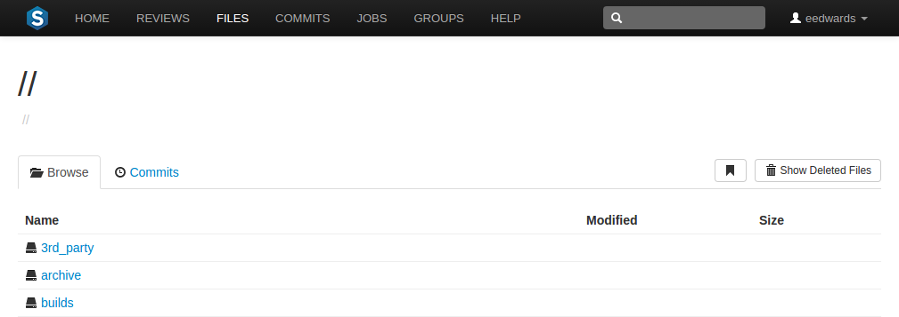
-
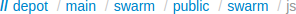
Swarm displays a list of breadcrumb links to help you quickly navigate to higher level directories quickly.
-

Links with folder icons represent directories of files within the depot. Click a directory link to display the contents of that directory.
-
Click the link with the up-arrow icon, when it appears, to navigate to the current directory's parent.
-
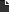
Links with dog-eared page icons represent individual files within the depot. See below for more information.
-
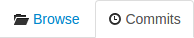
Click the tab to display the list of changes made to files in the current directory, or any directories it contains. See Commits for more information.
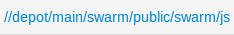
Swarm creates links for files and directories wherever they appear in the Swarm UI.
Note
Directories that start with a period, for example
.git-fusion, are sorted to appear at the end of the
list of directories. The link, when it appears,
always appears first.
Similarly, files that start with a period, for example
.htaccess, are sorted to appear at the end of the
list of files.
Downloading files as ZIP archive
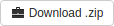 Swarm can provide a ZIP archive for a file or folder within the Helix Versioning Engine. This makes it easy to get a copy of files without having to setup a client.
When you click the button, Swarm performs the following steps:
-
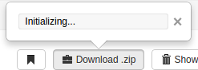 scan the selected file/folder, to determine if you have permission to access the contents (according to the Helix Versioning Engine protections), and if the file/folder is small enough to be processed by Swarm.
-
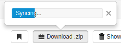 sync the file/folder contents to the Swarm server from the Helix Versioning Engine.
-
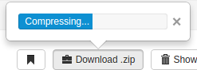 create the ZIP archive by compressing the file content.
-
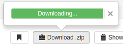 start a download of the generated ZIP archive.
You might not see all of the above steps; Swarm caches the resulting ZIP archives so that repeated requests to the same file/folder can skip the sync/compress steps whenever possible.
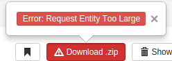 If an error occurs while scanning, syncing, or compressing, Swarm indicates the error.
For information on the configuration for ZIP archives, see Archives configuration.
Browsing deleted files and folders
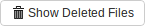
When the button is clicked, Swarm toggles the inclusion of deleted folders and files in the file display.
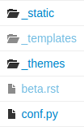
Deleted folders and files are presented slightly muted compared to non-deleted entries.
File display
When Swarm is asked to display a file, if the file is a type that Swarm can display, Swarm presents the file's contents. Clicking the button displays the file content with no surrounding page markup. Clicking the button causes the file to be downloaded.
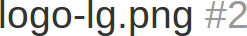
Along with the file's name, Swarm displays the version number for the
currently displayed file. For example, this heading indicates that version
2 of logo-lg.png is being
displayed. Every version of a file is available on the
Commits tab.
If the version of a file being previewed has been deleted, the version number appears in red:
Text Files
Swarm displays the contents of text files (include the Perforce
filetypes unicode and UTF16) with
line numbers. When possible, syntax highlighting is applied to make
identification of various elements within the file easier.
Tip
For more information on Perforce filetypes, see Perforce Command Reference: File Types
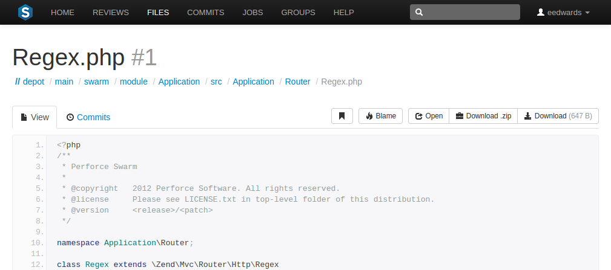
Click to add a column to the display that identifies the userid responsible for each line of the file.
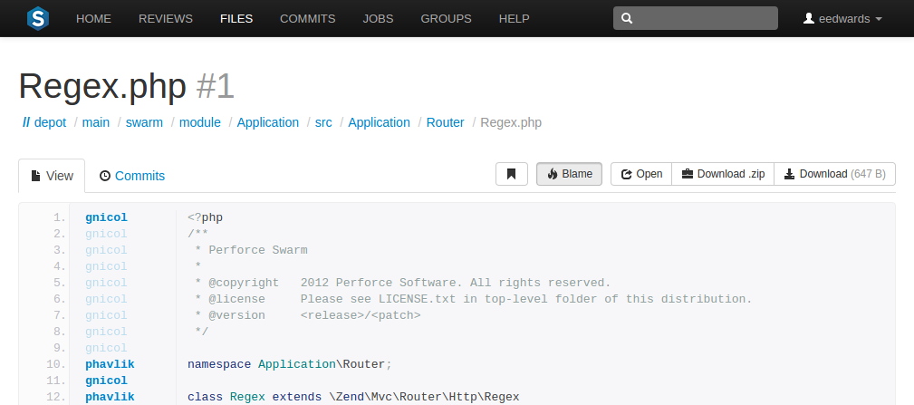
Each userid presented is a link that, when clicked, displays the changelist that provided the associated text. Muted userids indicate that the associated text is from the same changelist as the line above. For example, the userid gnicol is responsible for lines 1 through 9 in the screenshot above.
When you hover your pointer over a userid in the blame column, a tooltip appears displaying the associated changelist description.
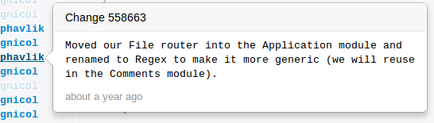
When there are no lines displayed, for example when you are viewing empty or shelved files, the button is disabled.
Images
Swarm displays web-safe images.
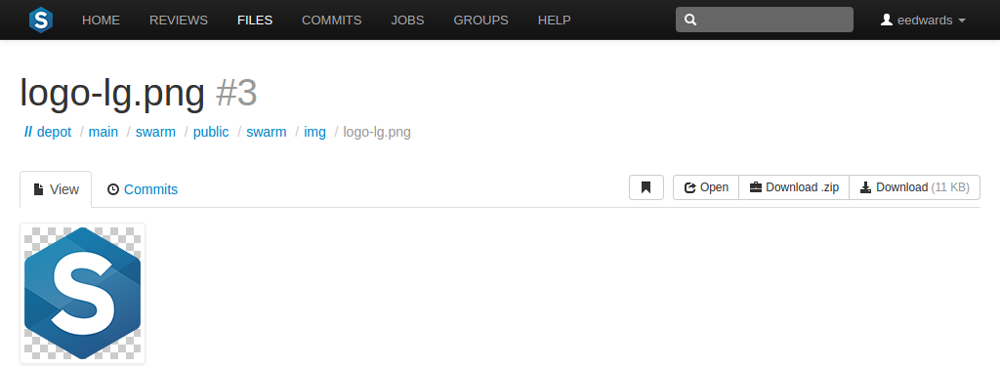
The checkerboard background in this example is not part of the logo; it helps identify where transparency exists.
Many browsers can display SVG images with no
additional plugins, so Swarm attempts to display SVG
images rather than displaying the image's definition. When you use a
browser that cannot natively display SVG images, you
see the broken image icon.
When imagick (an optional module that integrates
ImageMagick into PHP) is installed, Swarm can also display the following
image formats: BMP,
EPS,
PSD,
TGA,
TIFF.
3D models
Swarm 2014.1 includes support for displaying select 3D model file types in the browser:
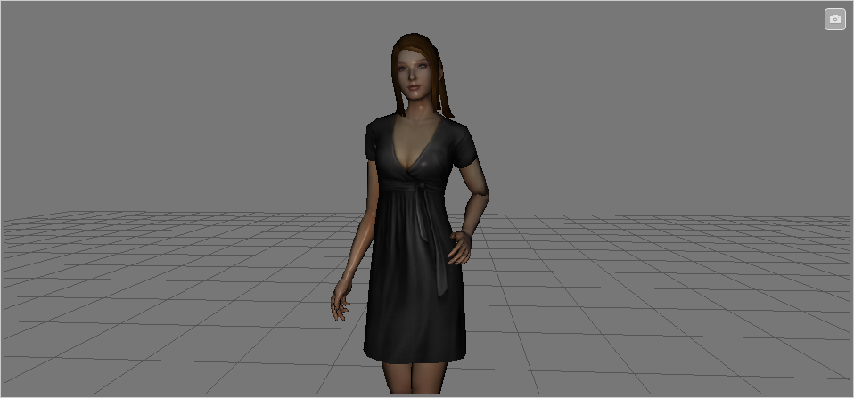
Supported file types include:
-
DAE - including any referenced web-safe texture images.
-
STL - both binary and ASCII versions of the format.
-
OBJ - including any referenced
MTLfiles, and web-safe texture images.
When Swarm can display a 3D model, it renders a generic grid stage and places the model in the center, scaled to make viewing straightforward. A toggle control appears in the top right: when enabled, you can control the view with the mouse, and when not enabled, permits auto-rotation to occur (when possible).
-
Click and hold the left mouse button to begin rotating the view. Drag while holding the left mouse button to rotate the view.
-
Click and hold the right mouse button to begin panning the view. Drag while holding the right mouse button to pan the view.
-
Roll the mouse wheel up or down to adjust the magnification of the view.
When possible, a second control appears allowing you to toggle between showing the model with surfaces, or just showing the model's wireframe.
Note
For systems with hardware acceleration, if your browser supports WebGL and hardware acceleration is enabled, Swarm renders the model and enables auto-rotation.
For systems without hardware acceleration or WebGL, but your browser supports HTML5 canvas elements and JavaScript TypedArrays, Swarm renders the model but auto-rotation is disabled. Rendering is likely to be slow and rendering quality is likely to be low.
For browsers without HTML5 canvas elements and JavaScript TypedArrays, no rendering is attempted; instead, users see a message indicating that the browser is not supported.
Other file types
It is possible to view other file types in Swarm, through the addition of additional modules, or by installing LibreOffice on the Swarm host.
When the file is a type that Swarm cannot display, Swarm presents the file's history, along with the button.
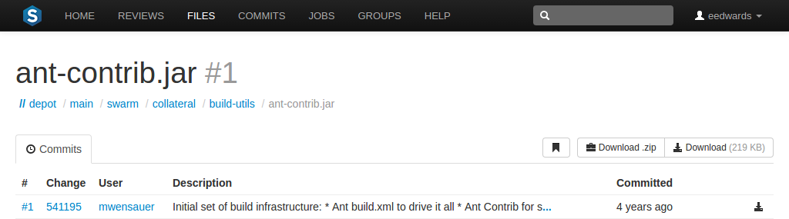